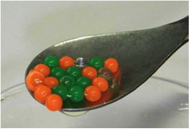
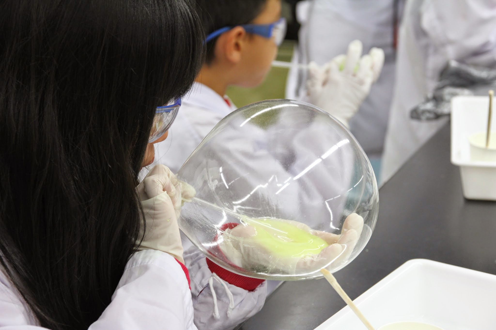

活動紹介
出張実験
はじめに
TMU-SFCは近隣の小学校や科学館へ出張し、実験教室を行っています。
私たちは化学の面白さを多くの人たちに伝えることを目的に活動しています。
実験には様々な工夫をしており、例えば実験の説明にはスライドを使用し、視覚的に分かりやすくしています。
さらに、実験結果の記録や原理に関するクイズが書いてある実験ノートを使うことで、子供たちの理解を深めます。
その他にも白衣・ゴーグル・手袋を身に付けてもらい、本物の科学者になりきることができます。
TMU-SFCはいつでも出張実験のご依頼を承っております。まずは気軽にご連絡下さい！
実験紹介
実際に出張実験で行っている実験を紹介します。
入浴剤作り
キッチンにある身近な材料を用いて、お湯に入れるとシュワシュワとした泡とアロマオイルの香りが広がるオリジナルの入浴剤が作れます。
【試薬】
重曹, クエン酸, デンプン
【時間】
20分
マイクロカプセル
塩化カルシウム水溶液に、海藻類のぬめりのもとであるアルギン酸ナトリウムの水溶液を滴下することで、
粒々としたイクラの様なものが出来ます。これがマイクロカプセルです。
【試薬】
アルギン酸ナトリウム水溶液, 塩化カルシウム水溶液, インク
【時間】
15分
ミラクルフラワー
酸性ではピンク色に、アルカリ性では青色を呈色する紫キャベツや紫イモの色素を染み込ませた半紙で花を作ります。
クエン酸溶液や重曹を吹きかけることで、花をピンクと青色に変えることができます。
【試薬】
紫イモ色素,炭酸水素ナトリウム（重曹）水溶液,クエン酸水溶液
【時間】
20分
尿素の結晶
尿素の結晶をつくって、成長を観察する実験です。
様々な形のモールに尿素の溶液を染み込ませて、乾燥させることで、結晶をつくることができます。
【試薬】
尿素
【時間】
20分
冷えるカイロ
水の入った袋を潰すだけでひんやり冷たくなるようなカイロを作ります。
尿素と硝酸アンモニウムが水に溶解することによって周囲の熱を奪い、ひんやり冷たく感じます。
【試薬】
尿素, 硝酸アンモニウム
【時間】
15分
スライム作り
スライム作りは簡単で面白く、子供たちに大人気の実験です。
スライムは、水とポリビニルアルコール(洗濯のり)とホウ砂を混ぜて作ります。
出張実験では、ゴムボールの様に弾ませて遊べる「はずむスライム」や、膨らませて遊べる「風船スライム」などの実験を行っております。
風船スライム
【試薬】
洗濯のり, ホウ砂水溶液, 蛍光インク
【時間】
30分
弾むスライム
【試薬】
洗濯のり, フエキのり, ホウ砂水溶液, 蛍光インク
【時間】
15分